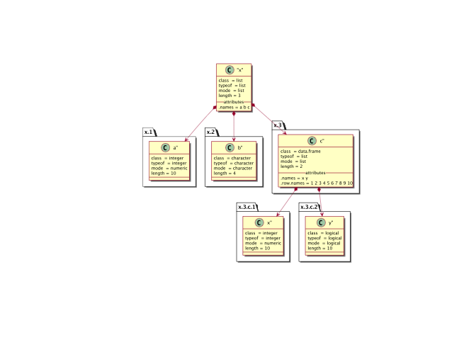

Overview
This package provides the functionality to create UML graphs using the PlantUML language.
Installation
Prerequisites
The actual work is done by the program plantuml. Please see the plantuml installation page for prerequisites of running plantuml.
Installation of plantuml
The package is not on CRAN, but it is in the R-Universe. The original installation instructions can be found there, but are here reproduced fdor simplicity:
# Enable repository from rkrug
options(repos = c(
rkrug = 'https://rkrug.r-universe.dev',
CRAN = 'https://cloud.r-project.org'))
# Download and install plantuml in R
install.packages('plantuml')
# Browse the plantuml manual pages
help(package = 'plantuml')Plotting Plantuml graphics
Plotting to a file
To save the graph in a file, we simply specify the file argument in the plot command:
plot(
x,
file = "./vignettes/test.svg"
)And here is the file

vignettes/test.svg
The type of the file is automatically determined based on the extension. Plantuml retturns an svg file, wi=hich is than converted using Suported extensions in plantuml are:
- svg To generate images in SVG format
- png To generate images in PNG format
- pdf To generate images in PDF format
- ps To generate images in PS format
- txt To generate images with ASCII artPlotting R objects
In addition to plotting based on plantuml code some basic functionality to document R objects has been included.
This is not much more than a proof of concept but includes all standard R objects.
If you think this is usefull, pelase let me know and leave sugestions in the issue tracker.
One example is:
x <- list(
a = 1:10,
b = letters[1:4],
c = data.frame(
x = 1:10,
y = c(TRUE, FALSE)
)
)
plot(
as.plantuml(x)
)
## [1] "/var/folders/5k/g8z_7q3d6vb54m8k0cjy940r0000gq/T//RtmpKTtJj4/plantuml.10de13e819524.svg"